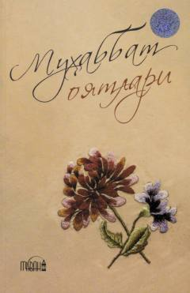

MOMuhabbat va insoniy munosabatlar haqidagi islomiy ma'naviy-axloqiy asar.
Ushbu kitob muhabbat va insoniy munosabatlar mavzusini islomiy nuqtai nazardan yoritib beradi. Muallif Hasanboy Fayzulloh Salohiddin O'rmonbek o'g'li tomonidan yozilgan asar ma'naviy tarbiya va oilaviy qadriyatlarga bag'ishlangan.